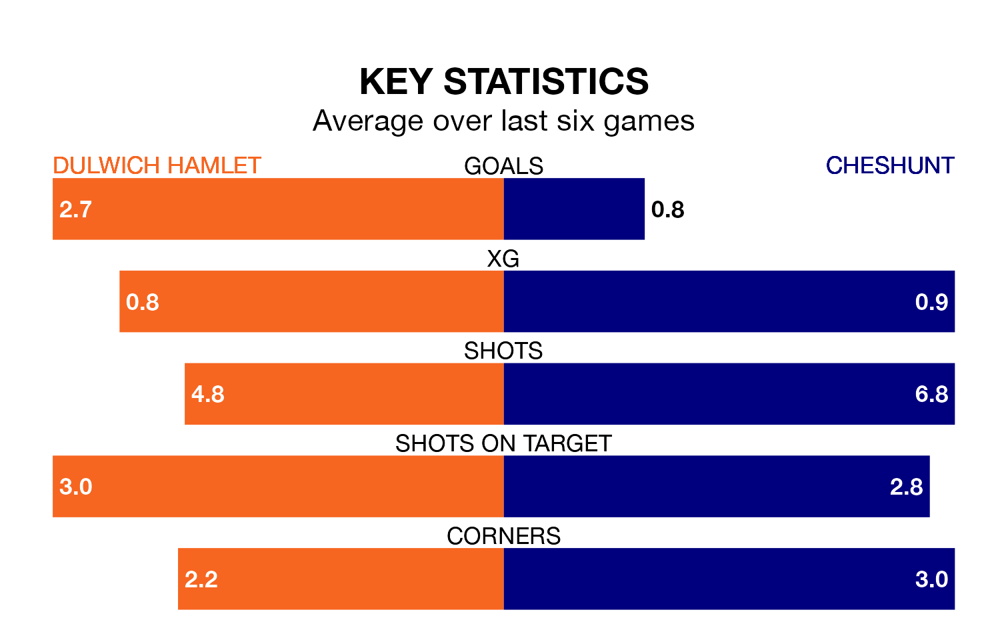

Dulwich Hamlet are heavy favourites to keep all three points at home in Saturday's kick-off against Cheshunt.
Dulwich Hamlet, who sit 10th in the Isthmian Premier Division with 30 games played, are priced at 1.6 to seal victory at Imperial Fields.
Sitting nine places and 22 points behind them in the table, Cheshunt are 4.3 to win with *Betting Company*, while the draw is at 4.1.
With 58 goals in 30 games so far this season, Dulwich Hamlet are the league's third-highest scorers with 1.9 goals per game. And they are conceding at an average rate, letting in 49 goals at a rate of 1.6 per game.
Cheshunt, meanwhile, are below average scorers, with 1.3 goals per game, compared to a league average of 1.6. They have conceded 1.8 goals per game.
The home team are in good form in the Isthmian Premier Division, with four wins and a draw from their last six games.
With a win and a draw over that period, the visitors' form is much worse – they have taken four points from 18, compared to Dulwich Hamlet's 13.
In the last five years, Dulwich Hamlet and Cheshunt have played each other on five occasions. Dulwich Hamlet won four of them and Cheshunt one.
On average, Dulwich Hamlet scored 1.8 goals and Cheshunt 0.6 in those matches.
Their last meeting was on October 7, when Dulwich Hamlet won 1-0 away.
Dulwich Hamlet's last match was on February 17, a 2-1 win against Concord Rangers.
Cheshunt lost 1-0 against Cray Wanderers last time out, also on February 17.
Updated: 10:08 (UTC), 23/02/24